<title>Modül İkonu Adayları</title>
<meta name="claude:viewport-fit-sides" content="cover">
<style>
/* Erdem'in UE kareleri sayfasıyla aynı dil: kâğıt zemin, mürekkep, turuncu vurgu; oyun kareleri koyu adalar. */
:root {
  --bg: #f6f3ee; --panel: #ffffff; --ink: #1f1b16; --ink-2: #5a524a; --line: #ddd5ca; --accent: #b4561c; --warn-bg: #fbecd9;
  --game: #1f1b16; --game-ink: #e9e4da; --pick: #2f7d4f;
  --f-body: system-ui, -apple-system, "Segoe UI", sans-serif;
}
@media (prefers-color-scheme: dark) {
  :root:not([data-theme="light"]) {
    --bg: #171411; --panel: #211d19; --ink: #efe9e1; --ink-2: #a89e92; --line: #3a332c; --accent: #f0a35e; --warn-bg: #3a2a18;
    --game: #0f0d0b; --game-ink: #e9e4da; --pick: #6cc28f; color-scheme: dark;
  }
}
:root[data-theme="dark"] {
  --bg: #171411; --panel: #211d19; --ink: #efe9e1; --ink-2: #a89e92; --line: #3a332c; --accent: #f0a35e; --warn-bg: #3a2a18;
  --game: #0f0d0b; --game-ink: #e9e4da; --pick: #6cc28f; color-scheme: dark;
}
* { box-sizing: border-box; }
body { margin: 0; background: var(--bg); color: var(--ink); font: 16px/1.55 var(--f-body); }
main { max-width: 1180px; margin: 0 auto; padding-block: 32px 64px; padding-left: max(16px, env(safe-area-inset-left, 0px)); padding-right: max(16px, env(safe-area-inset-right, 0px)); }
h1, h2 { text-wrap: balance; }
h1 { font-size: 30px; margin: 0 0 8px; }
h2 { font-size: 22px; margin: 48px 0 4px; padding-top: 16px; border-top: 1px solid var(--line); }
p, li { max-width: 78ch; }
.lead { color: var(--ink-2); }
.note { background: var(--warn-bg); padding: 12px 16px; border-radius: 6px; max-width: 78ch; }
a { color: var(--accent); }
a.s { text-decoration: none; font-size: 13px; font-variant-numeric: tabular-nums; }
code { font-size: 0.9em; }
.scope { color: var(--ink-2); margin: 0 0 12px; }
.table-wrap { overflow-x: auto; }
table { border-collapse: collapse; margin: 12px 0; width: 100%; font-size: 15px; }
th, td { text-align: left; padding: 6px 10px; border-bottom: 1px solid var(--line); vertical-align: top; }
th { color: var(--ink-2); font-weight: 600; }
td.num { font-variant-numeric: tabular-nums; white-space: nowrap; }
.muted { color: var(--ink-2); font-size: 13px; }
img.mini { background: var(--game); border-radius: 4px; padding: 2px; vertical-align: middle; }
.baseline { display: flex; align-items: center; gap: 12px; margin: 0 0 12px; flex-wrap: wrap; }
.baseline span { color: var(--ink-2); font-size: 14px; min-width: 48px; }
.baseline img { width: 288px; max-width: 100%; height: auto; image-rendering: pixelated; border-radius: 4px; }
.cands { display: grid; grid-template-columns: repeat(3, minmax(0, 1fr)); gap: 12px; }
.cand { margin: 0; background: var(--panel); border: 1px solid var(--line); border-radius: 8px; padding: 10px; display: grid; gap: 8px; min-width: 0; }
.cand.picked { border-color: var(--pick); box-shadow: inset 0 0 0 1px var(--pick); }
.cand-head { display: flex; gap: 8px; align-items: baseline; flex-wrap: wrap; }
.cand-head .k { font-size: 12px; letter-spacing: 0.06em; text-transform: uppercase; color: var(--ink-2); }
.rec { font-size: 12px; color: var(--pick); font-weight: 600; letter-spacing: 0.04em; }
.big { background: var(--game); border-radius: 6px; display: grid; place-items: center; padding: 14px 0; }
.cand img.row { width: 100%; height: auto; image-rendering: pixelated; border-radius: 4px; display: block; }
.cand figcaption { display: grid; gap: 4px; font-size: 14px; color: var(--ink-2); }
.cand figcaption .origin { color: var(--ink); }
.pick { margin: 14px 0 6px; }
.op { color: var(--accent); font-size: 13px; }
details { margin: 6px 0 0; }
summary { cursor: pointer; color: var(--accent); }
summary:focus-visible, a:focus-visible { outline: 2px solid var(--accent); outline-offset: 2px; }
.frames figure { margin: 0 0 16px; }
.frames img { width: 100%; height: auto; display: block; border-radius: 6px; image-rendering: pixelated; }
.frames figcaption, .res figcaption { font-size: 14px; color: var(--ink-2); padding-top: 6px; }
.full { display: grid; grid-template-columns: repeat(4, minmax(0, 1fr)); gap: 8px; margin: 8px 0 16px; }
.full a { display: block; font-size: 13px; }
.full img { width: 100%; height: auto; border-radius: 4px; display: block; }
.res { display: grid; gap: 16px; }
.res figure { margin: 0; background: var(--panel); border: 1px solid var(--line); border-radius: 8px; padding: 10px; min-width: 0; }
.res img { max-width: 100%; height: auto; display: block; }
.ok { color: var(--pick); font-weight: 600; }
@media (max-width: 760px) {
  .cands, .full { grid-template-columns: 1fr; }
}
</style>
<main>
  <h1>Modül ikonları: adaylar</h1>
  <p class="lead">Ürün penceresinin sol sütununda iki harfli işaretlerin (ÇK, İK, EN, GÜ, BÜ, GE) yerine gelecek ikonlar. Onaylı ikiler aynen kalıyor:
  Çekirdek küp , Güven &amp; Ölçek kalkan .
  Kalan dört modülün her biri için üç aday var; her modülden birini seç. Seçilenleri URUN_ARAYUZU bağlar.</p>

  <div class="table-wrap"><table>
    <thead><tr><th>Modül</th><th>Önerim</th><th>Öbür adaylar</th></tr></thead>
    <tbody><tr><td>İlk Kullanım ve Erişim</td><td> küme 1: açık kapı</td><td>giriş oku, telefon</td></tr><tr><td>Entegrasyonlar</td><td> küme 1: yapboz parçası</td><td>fiş, zincir halkası</td></tr><tr><td>Büyüme</td><td> küme 1: filiz</td><td>insan grubu, megafon</td></tr><tr><td>Gelir</td><td> küme 2: banknot</td><td>daire içinde dolar, kredi kartı</td></tr></tbody>
  </table></div>
  <p class="note">Kareler oyunun kendisinden: 1920×1080, TR, aday kümesi bir ortam değişkeniyle açılan bir prototipte (kod repoya girmedi). Küme <i>i</i>,
  her modülün <i>i</i>. adayı. Yakın planlar karenin sol sütunundan kırpıldı ve en yakın komşuyla 2× büyütüldü: 16 piksellik ikon oyundaki gibi.
  Satırın tamamına bakıldı: taşma yok, kesilme yok. Godot MCP'yle canlı oyunda da bakıldı (üç küme B2C, küme 1 B2B): ikonlar keskin, koyu zeminde seçiliyor.</p>
  
  <section id="m-onboarding">
    <h2>İlk Kullanım ve Erişim</h2>
    <p class="scope">B2B ve B2C · hatları: Mobil uygulama, Yardım Merkezi · reddedilen: mezuniyet şapkası (world/training.svg)</p>
    <div class="baseline"><span>Bugün</span>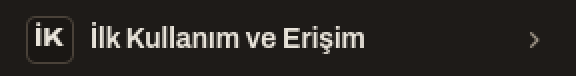</div>
    <div class="cands">
    <figure class="cand picked">
      <div class="cand-head"><span class="k">Küme 1</span><b>Açık kapı</b> <span class="rec">önerim</span></div>
      <div class="big"></div>
      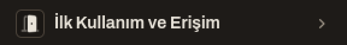
      <figcaption><span class="origin">set dışı · Lucide <code>door-open</code>, dolguya çevrildi (kapı kanadı tam, kasa ve eşik 0,4)</span><span>Giriş ve erişim. Ekranda başka hiçbir ikonla karışmıyor.</span></figcaption>
    </figure>
    <figure class="cand">
      <div class="cand-head"><span class="k">Küme 2</span><b>Giriş oku</b></div>
      <div class="big"></div>
      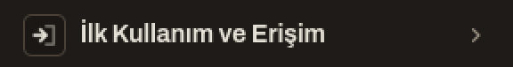
      <figcaption><span class="origin">setten türetildi · <code>util/exit.svg</code> aynalandı (köşebent sağda, ok içeri giriyor)</span><span>Setin kendi çizgisi. Oyunda Çıkış ikonunun eşi olduğu için &quot;çıkış&quot; ile karışabilir.</span></figcaption>
    </figure>
    <figure class="cand">
      <div class="cand-head"><span class="k">Küme 3</span><b>Telefon</b></div>
      <div class="big"></div>
      
      <figcaption><span class="origin">set dışı · Lucide <code>smartphone</code>, dolguya çevrildi</span><span>Yalnız Mobil hattını anlatır, Yardım Merkezi&#x27;ni anlatmaz. 16 px&#x27;te boş bir levha gibi okunuyor.</span></figcaption>
    </figure>
    </div>
    <p class="pick"><b>Önerim: küme 1, açık kapı.</b> Kapı, &quot;ilk giriş ve erişim&quot; demeye en yakın; 16 px&#x27;te kapı olarak seçiliyor ve sol rayın hiçbir ikonuyla çakışmıyor. İlk kullanımı tek ikonla gösteren bir oyun ya da pano örneği bulunamadı; öneri bu yüzden görüş <span class="op">[GÖRÜŞ]</span>.</p>
    <details><summary>Araştırmada bu modül için ne görüldü</summary><ul><li>Panolarda ilk kullanım için yerleşik bir işaret yok: Pendo rehberleri konuşma balonuyla <a class="s" href="#S26">[S26]</a>, Intercom giden mesajları kâğıt uçakla <a class="s" href="#S22">[S22]</a> çiziyor.</li><li>Yardım merkezi Zendesk'te düz dolgulu kitap <a class="s" href="#S28">[S28]</a>; eski sürümdeki soyut üçgenler okunmuyordu <a class="s" href="#S29">[S29]</a>.</li><li>Startup Panic mobil uygulama özelliğini telefonla gösteriyor <a class="s" href="#S17">[S17]</a>.</li></ul></details>
  </section>
  <section id="m-integrations">
    <h2>Entegrasyonlar</h2>
    <p class="scope">yalnız B2B · hattı: Entegrasyonlar · reddedilen: komut satırı penceresi (dept/development.svg)</p>
    <div class="baseline"><span>Bugün</span>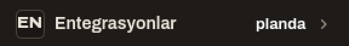</div>
    <div class="cands">
    <figure class="cand picked">
      <div class="cand-head"><span class="k">Küme 1</span><b>Yapboz parçası</b> <span class="rec">önerim</span></div>
      <div class="big"></div>
      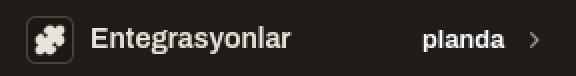
      <figcaption><span class="origin">set dışı · Lucide <code>puzzle</code>, dolguya çevrildi</span><span>Eklenti ve entegrasyonun yerleşik işareti.</span></figcaption>
    </figure>
    <figure class="cand">
      <div class="cand-head"><span class="k">Küme 2</span><b>Fiş</b></div>
      <div class="big"></div>
      
      <figcaption><span class="origin">set dışı · Lucide <code>plug</code>, dolguya çevrildi</span><span>Bağlanmak. Yapbozdan daha somut, daha az yerleşik.</span></figcaption>
    </figure>
    <figure class="cand">
      <div class="cand-head"><span class="k">Küme 3</span><b>Zincir halkası</b></div>
      <div class="big"></div>
      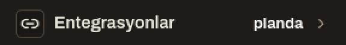
      <figcaption><span class="origin">set dışı · Lucide <code>link-2</code>, dolguya çevrildi</span><span>Bağlantı. Web&#x27;de çoğu zaman &quot;adres bağlantısı&quot; diye okunur.</span></figcaption>
    </figure>
    </div>
    <p class="pick"><b>Önerim: küme 1, yapboz parçası.</b> Yapboz, kütüphanelerde doğrudan &quot;integration&quot; ve &quot;plugin&quot; etiketini taşıyor ve Chrome&#x27;un eklenti düğmesi. Karşı örnek: Startup Company aynı glifi başka bir bileşen için kullanıyor.</p>
    <details><summary>Araştırmada bu modül için ne görüldü</summary><ul><li>Material Symbols'ın <code>extension</code> ikonu (yapboz) "integration", "plugin", "puzzle" etiketlerini taşıyor <a class="s" href="#S34">[S34]</a>; Font Awesome ve SF Symbols aynı glifi eklenti için kullanıyor <a class="s" href="#S36">[S36]</a><a class="s" href="#S39">[S39]</a>.</li><li>Chrome eklenti menüsünün düğmesi yapboz <a class="s" href="#S43">[S43]</a>. Tepki ikona değil, eklentilerin menüye gizlenmesineydi.</li><li>Fiş: Phosphor'da bağlı iki fiş <a class="s" href="#S38">[S38]</a>; Startup Company'nin modül ızgarasında fiş var, API olduğu çıkarım, doğrulanmadı <a class="s" href="#S2">[S2]</a>.</li><li>Karşı örnek: Startup Company yapbozu "Semantic" bileşeninde kullanıyor <a class="s" href="#S5">[S5]</a>. Notion bağlantıları düğüm ağıyla gösteriyor <a class="s" href="#S21">[S21]</a>.</li></ul></details>
  </section>
  <section id="m-growth">
    <h2>Büyüme</h2>
    <p class="scope">yalnız B2C · hattı: Entegrasyonlar (paylaşma, davet) · reddedilen: daire içinde yukarı ok (stake/cash_in.svg)</p>
    <div class="baseline"><span>Bugün</span>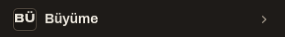</div>
    <div class="cands">
    <figure class="cand picked">
      <div class="cand-head"><span class="k">Küme 1</span><b>Filiz</b> <span class="rec">önerim</span></div>
      <div class="big"></div>
      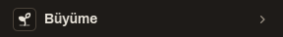
      <figcaption><span class="origin">set dışı · Lucide <code>sprout</code>, dolguya çevrildi (zemin çizgisi 0,4)</span><span>Büyüyen şey; ok ya da grafik yok.</span></figcaption>
    </figure>
    <figure class="cand">
      <div class="cand-head"><span class="k">Küme 2</span><b>İnsan grubu</b></div>
      <div class="big"></div>
      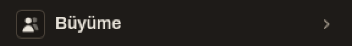
      <figcaption><span class="origin">set içi · <code>rail/hr.svg</code></span><span>Kitle. Oyunlarda kullanıcı artışının ikonu, ama sol rayda EKİP&#x27;in ikonu.</span></figcaption>
    </figure>
    <figure class="cand">
      <div class="cand-head"><span class="k">Küme 3</span><b>Megafon</b></div>
      <div class="big"></div>
      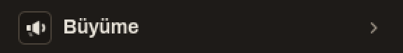
      <figcaption><span class="origin">set içi · <code>rail/marketing.svg</code></span><span>Pazarlama. Sol rayda PAZARLAMA&#x27;nın ikonu.</span></figcaption>
    </figure>
    </div>
    <p class="pick"><b>Önerim: küme 1, filiz.</b> Oyunlar kullanıcı artışını insan grubuyla çiziyor; ama aynı glif aynı ekranda EKİP&#x27;in ikonu (canlı karede yan yana duruyor). Megafon da PAZARLAMA&#x27;nın. Yükselen çizgi ve ok belirsiz bulunmuş ve yukarı ok reddedildi. Filiz çakışmasız ve oksuz; oyun ya da pano örneği yok, yalnız kütüphane geleneği <span class="op">[GÖRÜŞ]</span>.</p>
    <details><summary>Araştırmada bu modül için ne görüldü</summary><ul><li>Startup Company kullanıcı artıran özellikleri insan grubuyla grupluyor <a class="s" href="#S3">[S3]</a>; Startup Panic kullanıcıları yüzle <a class="s" href="#S15">[S15]</a>, daveti kişi ve artıyla <a class="s" href="#S17">[S17]</a> gösteriyor.</li><li>Pazarlama iki oyunda megafon <a class="s" href="#S1">[S1]</a><a class="s" href="#S16">[S16]</a>.</li><li>Yükselen çizgi Material'da ve Play Console'un "Grow users" bölümünde var <a class="s" href="#S35">[S35]</a><a class="s" href="#S27">[S27]</a>; NN/g: <i>"trendline icons are more ambiguous due to the lack of a standard"</i> <a class="s" href="#S45">[S45]</a>. Mad Games Tycoon 2'de yükselen grafik ikonunu oyuncular yanlış okumuş <a class="s" href="#S46">[S46]</a>.</li><li>Kutudan yukarı çıkan ok "yükle" diye okunuyor <a class="s" href="#S48">[S48]</a>. Shopify "Growth"u hız göstergesiyle çiziyor <a class="s" href="#S24">[S24]</a>.</li><li>Filiz için yalnız kütüphane örneği var <a class="s" href="#S31">[S31]</a>; oyunda ya da panoda bulunamadı.</li></ul></details>
  </section>
  <section id="m-revenue">
    <h2>Gelir</h2>
    <p class="scope">yalnız B2C · ücretli plan · reddedilen: fiyat etiketi (skill/sales.svg)</p>
    <div class="baseline"><span>Bugün</span>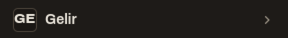</div>
    <div class="cands">
    <figure class="cand">
      <div class="cand-head"><span class="k">Küme 1</span><b>Daire içinde dolar</b></div>
      <div class="big"></div>
      
      <figcaption><span class="origin">set içi · <code>rail/finance.svg</code></span><span>Para. Sol rayda FİNANS&#x27;ın ikonu.</span></figcaption>
    </figure>
    <figure class="cand picked">
      <div class="cand-head"><span class="k">Küme 2</span><b>Banknot</b> <span class="rec">önerim</span></div>
      <div class="big"></div>
      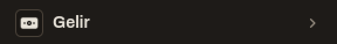
      <figcaption><span class="origin">set dışı · Lucide <code>banknote</code>, dolguya çevrildi</span><span>Gelen para. Şirket oyunlarının gelir ikonu.</span></figcaption>
    </figure>
    <figure class="cand">
      <div class="cand-head"><span class="k">Küme 3</span><b>Kredi kartı</b></div>
      <div class="big"></div>
      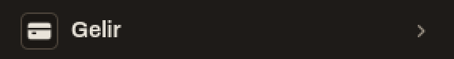
      <figcaption><span class="origin">set dışı · Lucide <code>credit-card</code>, dolguya çevrildi</span><span>Ödeme. Gelirden çok ödeme yöntemi okunur.</span></figcaption>
    </figure>
    </div>
    <p class="pick"><b>Önerim: küme 2, banknot.</b> Startup Company &quot;Revenue Features&quot; başlığını, Startup Panic kasayı banknotla çiziyor. Daire içinde dolar setin içinde, ama aynı ekranda FİNANS&#x27;ın ikonu.</p>
    <details><summary>Araştırmada bu modül için ne görüldü</summary><ul><li>Startup Company "Revenue Features" başlığında banknot <a class="s" href="#S3">[S3]</a>, Startup Panic kasada banknot destesi <a class="s" href="#S15">[S15]</a>, Font Awesome para ikonunda banknot <a class="s" href="#S37">[S37]</a>.</li><li>Daire içinde dolar Lucide'de en yaygın okunan para ikonu <a class="s" href="#S32">[S32]</a>.</li><li>Fiyat etiketi Play Console'da para kazanmanın ikonu <a class="s" href="#S27">[S27]</a>, StoryGraph'ta içerik etiketi <a class="s" href="#S49">[S49]</a>: iki anlamlı.</li><li>Stripe faturalamayı belge ve yenileme okuyla gösteriyor <a class="s" href="#S23">[S23]</a>.</li></ul></details>
  </section>

  <h2>Oyunun içinde, dört kare yan yana</h2>
  <div class="frames">
    <figure>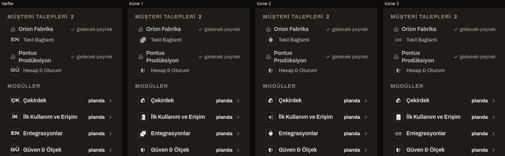
      <figcaption>B2B (<code>live:a4_two_pm</code>): talep satırlarında da modül işareti var. Soldan: bugün, küme 1, küme 2, küme 3. Taşma yok, kesilme yok.</figcaption></figure>
    <figure>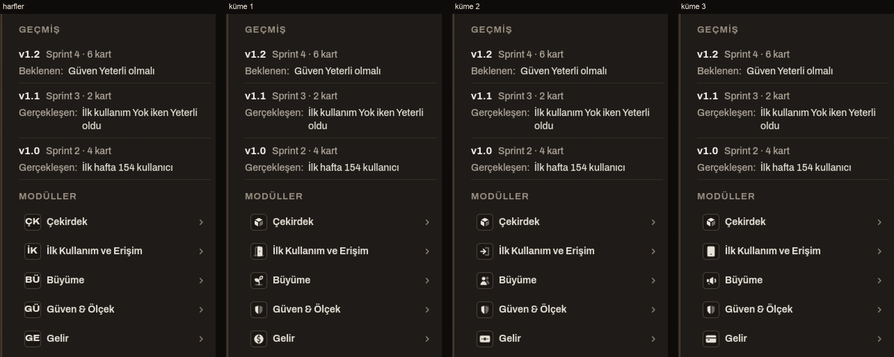
      <figcaption>B2C (<code>live:b2c_live</code>, geçmiş açık). Soldan: bugün, küme 1, küme 2, küme 3. Taşma yok, kesilme yok.</figcaption></figure>
  </div>
  <p>Tam kareler (sol ray ikonlarıyla birlikte; çakışmalar burada görünüyor):</p>
  <div class="full">
    <a href="img/full_a4_two_pm_k0.webp">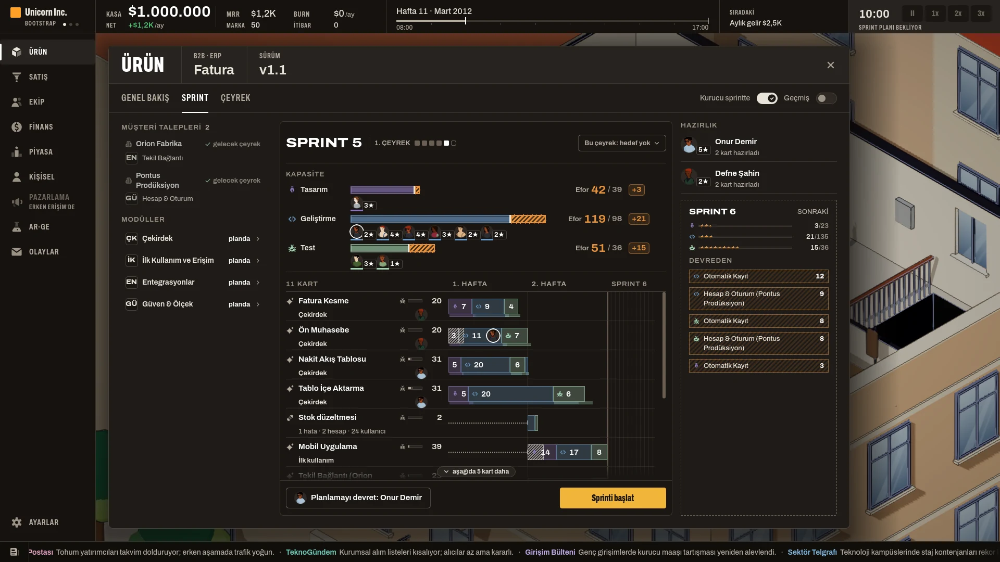a4_two_pm · bugün</a><a href="img/full_a4_two_pm_k1.webp">a4_two_pm · küme 1</a><a href="img/full_a4_two_pm_k2.webp">a4_two_pm · küme 2</a><a href="img/full_a4_two_pm_k3.webp">a4_two_pm · küme 3</a><a href="img/full_b2c_live_k0.webp">b2c_live · bugün</a><a href="img/full_b2c_live_k1.webp">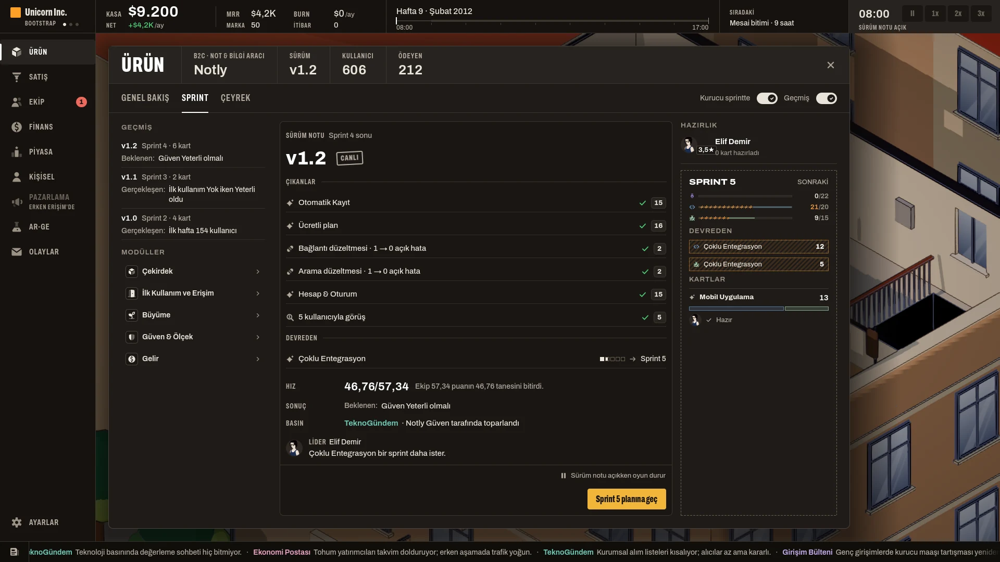b2c_live · küme 1</a><a href="img/full_b2c_live_k2.webp">b2c_live · küme 2</a><a href="img/full_b2c_live_k3.webp">b2c_live · küme 3</a>
  </div>
  <p class="note">Aynı ekranda sol rayda duran ikonlarla çakışanlar: daire içinde dolar = FİNANS, insan grubu = EKİP, megafon = PAZARLAMA.
  Onaylı küp de ÜRÜN'ün ikonu, yani bu çakışma bir kez kabul edildi. Çakışmayan adaylar: kapı, giriş oku, telefon, yapboz, fiş, zincir, filiz, banknot, kredi kartı.</p>

  <h2>Araştırmadan iki kare</h2>
  <div class="res">
    <figure>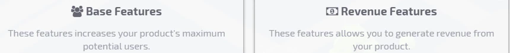
      <figcaption>Startup Company, geliştiricinin kendi ekranı: kullanıcı artıran özellikler insan grubuyla, gelir getirenler banknotla <a class="s" href="#S3">[S3]</a>. Aynı banknot oyunda yatırım sekmesinde de duruyor.</figcaption></figure>
    <figure>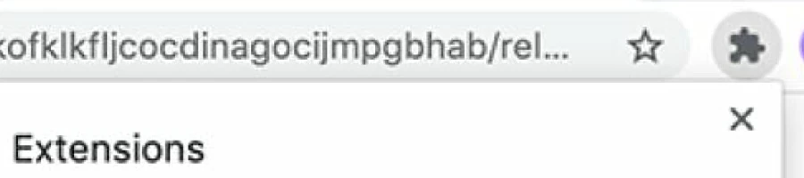
      <figcaption>Chrome'un eklenti düğmesi yapboz parçası <a class="s" href="#S43">[S43]</a>. Material Symbols aynı glifi "integration" ve "plugin" etiketiyle sunuyor <a class="s" href="#S34">[S34]</a>.</figcaption></figure>
  </div>
  <p>Genel bulgu: NN/g'ye göre evrensel tanınan ikon çok az; <i>"a text label must be present alongside an icon"</i> <a class="s" href="#S40">[S40]</a>. Bizim satırlarda modülün adı ikonun yanında
  durmaya devam ediyor; ikon adın yerine geçmiyor, satırı adı okumadan ayırt ettiriyor.</p>

  <h2>Notlar</h2>
  <ul>
    <li>Set dışı adaylar yalnız Lucide'den (ISC lisansı depoda: <code>assets/art/office/icons/LICENSE-lucide.txt</code>). Lucide çizgi ikonudur; setin düz dolgulu stiline bir betikle
    çevrildi: kapalı biçimler dolduruldu, içteki ayrıntılar delik oldu, ikincil parça 0,4 opaklıkta. Seçilirse SVG'yi URUN_ARAYUZU <code>assets/icons/</code>'a koyar.</li>
    <li>Giriş oku yeni çizim değil: <code>util/exit.svg</code>'nin köşebendi aynalandı, oku köşebendin içine kaydırıldı.</li>
    <li><code>assets/icons/</code>'un kaynağı hâlâ açık (PRD_ANA_MENU_ONBOARDING L4); set içi adaylar da bu açık kalemin altında.</li>
    <li>Kareler dizüstünde (Mac) çekildi. Mac'te pencere tam ekranda açıldığı için kopyaya <code>override.cfg</code> ile pencereli açılış verildi; kare boyutu böylece 1920×1080.</li>
  </ul>

  <h2>Kaynak sicili</h2>
  <p class="muted">Erişim 2026-10-28. Her kaynak bir ekran görüntüsüyle toplandı ve ayrı bir doğrulayıcı görüntüyü açıp ikonu ve kırpma bölgesini yeniden denetledi.</p>
  <div class="table-wrap"><table>
    <thead><tr><th>ID</th><th>Kaynak</th><th>Yayıncı</th><th>Yayın</th><th>Güven</th><th>Görüntü</th></tr></thead>
    <tbody><tr id="S1"><td class="num">S1</td><td><a href="https://store.steampowered.com/app/606800/Startup_Company/">Startup Company – Steam mağaza görüntüsü (ürün penceresi sekmeleri: Stats/Features/Hosting/Marketing/Venture Capital/Support)</a><br><span class="muted">Startup Company</span></td>
<td>Hovgaard Games (Steam mağaza sayfası)</td><td class="num">bilinmiyor</td><td>Yüksek</td><td><a href="https://shared.akamai.steamstatic.com/store_item_assets/steam/apps/606800/ss_60b0b2a8fb13081564c418913f9afbebe78c3562.1920x1080.jpg?t=1727681373">kare</a> · doğrulandı</td></tr><tr id="S2"><td class="num">S2</td><td><a href="https://store.steampowered.com/app/606800/Startup_Company/">Startup Company – Steam mağaza görüntüsü (Lead Developer modül ızgarası)</a><br><span class="muted">Startup Company</span></td>
<td>Hovgaard Games (Steam mağaza sayfası)</td><td class="num">bilinmiyor</td><td>Yüksek</td><td><a href="https://shared.akamai.steamstatic.com/store_item_assets/steam/apps/606800/ss_8dac9adb157819ab46d7d360ac63f8f61b75e5c1.1920x1080.jpg?t=1727681373">kare</a> · doğrulandı</td></tr><tr id="S3"><td class="num">S3</td><td><a href="https://steamstore-a.akamaihd.net/news/externalpost/steam_community_announcements/2444779293765288700">Startup Company – Devlog #25: Base Features ve Revenue Features</a><br><span class="muted">Startup Company</span></td>
<td>Hovgaard Games / Jonas Hovgaard (Steam duyurusu, yazar jhovg</td><td class="num">2018-08-17</td><td>Yüksek</td><td><a href="https://clan.akamai.steamstatic.com/images/28693489/08e379bc87e390dfd896a5ade5028cbf2f5c0ebf.png">kare</a> · düzeltildi</td></tr><tr id="S5"><td class="num">S5</td><td><a href="https://startupcompany.fandom.com/wiki/Developer">Startup Company Wiki – Semantic Component ikonu (File:Semantic.png)</a><br><span class="muted">Startup Company</span></td>
<td>Startup Company Wiki (Fandom, topluluk)</td><td class="num">2023-01-16</td><td>Orta</td><td><a href="https://static.wikia.nocookie.net/startupcompany/images/d/de/Semantic.png/revision/latest?cb=20230116012834">kare</a> · doğrulandı</td></tr><tr id="S15"><td class="num">S15</td><td><a href="https://store.steampowered.com/app/1045610/">Startup Panic: Steam mağaza ekran görüntüsü, üst gösterge çubuğu (Cash / Users / Date) ve pazarlama görevi</a><br><span class="muted">Startup Panic</span></td>
<td>Algorocks (geliştirici) / tinyBuild (yayıncı), Steam mağaza </td><td class="num">bilinmiyor</td><td>Yüksek</td><td><a href="https://shared.akamai.steamstatic.com/store_item_assets/steam/apps/1045610/ss_bd01c2f453bfc58b9f3f911ec15f977557a95e22.1920x1080.jpg?t=1727200932">kare</a> · doğrulandı</td></tr><tr id="S16"><td class="num">S16</td><td><a href="https://store.steampowered.com/app/1045610/">Startup Panic: Steam mağaza ekran görüntüsü, dünya haritası (pazarlama araç çubuğu ve bölge işaretleri)</a><br><span class="muted">Startup Panic</span></td>
<td>Algorocks (geliştirici) / tinyBuild (yayıncı), Steam mağaza </td><td class="num">bilinmiyor</td><td>Yüksek</td><td><a href="https://shared.akamai.steamstatic.com/store_item_assets/steam/apps/1045610/ss_f3f78a90ac579489c47d2580580ac8ee09342af8.1920x1080.jpg?t=1727200932">kare</a> · doğrulandı</td></tr><tr id="S17"><td class="num">S17</td><td><a href="https://store.steampowered.com/app/1045610/">Startup Panic: Steam mağaza ekran görüntüsü, ürün özellik ağacı (altıgen düğümler)</a><br><span class="muted">Startup Panic</span></td>
<td>Algorocks (geliştirici) / tinyBuild (yayıncı), Steam mağaza </td><td class="num">bilinmiyor</td><td>Yüksek</td><td><a href="https://shared.akamai.steamstatic.com/store_item_assets/steam/apps/1045610/ss_acde429a48c7a5e3121a7f3953cb0135e9e3a62f.1920x1080.jpg?t=1727200932">kare</a> · doğrulandı</td></tr><tr id="S21"><td class="num">S21</td><td><a href="https://www.notion.com/help/add-and-manage-connections-with-the-api">Add &amp; manage connections with the API (Notion Help Center)</a><br><span class="muted">Notion</span></td>
<td>Notion Labs</td><td class="num">bilinmiyor</td><td>Yüksek</td><td><a href="https://images.ctfassets.net/spoqsaf9291f/7zzSpPbv4zLVJBfFFSW5dU/23b05f9414fd0aa964b36205cc3b55ec/add_connections_to_pages.png">kare</a> · doğrulandı</td></tr><tr id="S22"><td class="num">S22</td><td><a href="https://www.intercom.com/changes/en/2264-new-home-for-outbound-messages-and-improvements-to-message-creation-and-organization">New home for outbound messages and improvements to message creation and organization (Intercom Changes)</a><br><span class="muted">Intercom</span></td>
<td>Intercom</td><td class="num">2019-11-04</td><td>Yüksek</td><td><a href="https://downloads.intercomcdn.com/i/o/589765366/15a04b6d6bf65fcd6f4d6e88/pictures?expires=1793203200&amp;signature=47a8df183be6c0a3383cb9aa08ce959ba273b35a94c95c2ede8c8037efdf3ccc&amp;req=cSguEc97nodZFb4f3HP0gDhkQJnd6tl%2F6Pf%2F8iQJGP0D2DBVoBVTfD1ysLzx%0Az%2FhOMYlsAejhNFBaMg%3D%3D%0A">kare</a> · doğrulandı</td></tr><tr id="S23"><td class="num">S23</td><td><a href="https://docs.stripe.com/stripe-apps/patterns/full-page-apps">Full-page apps (Stripe Docs, Stripe Apps patterns)</a><br><span class="muted">Stripe Dashboard</span></td>
<td>Stripe</td><td class="num">bilinmiyor</td><td>Yüksek</td><td><a href="https://docs.stripecdn.com/8a9e806f8630691f96a7aca4e200b859c012b6148abdc70cfea91217f3603f6e.png">kare</a> · doğrulandı</td></tr><tr id="S24"><td class="num">S24</td><td><a href="https://shopify.dev/docs/apps/design/navigation">Navigation (Shopify App Design Guidelines, shopify.dev)</a><br><span class="muted">Shopify admin</span></td>
<td>Shopify</td><td class="num">bilinmiyor</td><td>Yüksek</td><td><a href="https://shopify.dev/assets/assets/images/app-design-guidelines/navigation/navigation-diagram-web-DXSUSYs2.png">kare</a> · doğrulandı</td></tr><tr id="S26"><td class="num">S26</td><td><a href="https://support.pendo.io/hc/en-us/articles/20826000368411-Take-a-tour-of-Pendo">Take a tour of Pendo (Pendo Help Center)</a><br><span class="muted">Pendo</span></td>
<td>Pendo</td><td class="num">2026-10-05</td><td>Yüksek</td><td><a href="https://support.pendo.io/hc/article_attachments/48622194850203">kare</a> · doğrulandı</td></tr><tr id="S27"><td class="num">S27</td><td><a href="https://developer.android.com/blog/posts/accelerating-your-insights-with-faster-smarter-monetization-data-and-recommendations">Accelerating your insights with faster, smarter monetization data and recommendations (Android Developers Blog)</a><br><span class="muted">Google Play Console</span></td>
<td>Google (Android Developers Blog, yazar: Phalene Gowling)</td><td class="num">2026-01-29</td><td>Yüksek</td><td><a href="https://developer.android.com/static/blog/assets/VOP_Recos_1_bd2692dea8_ZQCUd8.webp">kare</a> · doğrulandı</td></tr><tr id="S28"><td class="num">S28</td><td><a href="https://support.zendesk.com/hc/en-us/articles/4581766374554">Using Zendesk Admin Center (Zendesk help)</a><br><span class="muted">Zendesk (ürün tepsisi)</span></td>
<td>Zendesk</td><td class="num">bilinmiyor</td><td>Yüksek</td><td><a href="https://zen-marketing-documentation.s3.amazonaws.com/docs/en/admin_center_product_tray3.png">kare</a> · doğrulandı</td></tr><tr id="S29"><td class="num">S29</td><td><a href="https://community.zendesk.com/fid-0/tid-6115">&quot;Zendesk Products&quot; admin menu icons are not helpful (Zendesk Community)</a><br><span class="muted">Zendesk (eski ürün tepsisi)</span></td>
<td>Zendesk Community (kullanıcı Aaron15; Zendesk çalışanı yanıt</td><td class="num">2021-12-08</td><td>Düşük</td><td><a href="https://uploads-us-west-2.insided.com/zendesk2-en/attachment/WcP1gaVe8canXTFJinjrcg.png">kare</a> · doğrulandı</td></tr><tr id="S31"><td class="num">S31</td><td><a href="https://unpkg.com/lucide-static@1.63.0/tags.json">Lucide 1.63.0: büyüme ikonları ve etiketleri (tags.json + sprout.svg)</a><br><span class="muted">Lucide</span></td>
<td>Lucide (lucide-icons, ISC lisansı)</td><td class="num">2026-10-28</td><td>Yüksek</td><td><a href="https://unpkg.com/lucide-static@1.63.0/icons/sprout.svg">kare</a> · doğrulandı</td></tr><tr id="S32"><td class="num">S32</td><td><a href="https://unpkg.com/lucide-static@1.63.0/tags.json">Lucide 1.63.0: gelir ikonları ve etiketleri (tags.json + circle-dollar-sign.svg)</a><br><span class="muted">Lucide</span></td>
<td>Lucide (lucide-icons, ISC lisansı)</td><td class="num">2026-10-28</td><td>Yüksek</td><td><a href="https://unpkg.com/lucide-static@1.63.0/icons/circle-dollar-sign.svg">kare</a> · doğrulandı</td></tr><tr id="S33"><td class="num">S33</td><td><a href="https://unpkg.com/lucide-static@1.63.0/tags.json">Lucide 1.63.0: ilk kullanım/erişim ikonları ve etiketleri (tags.json + lighthouse.svg)</a><br><span class="muted">Lucide</span></td>
<td>Lucide (lucide-icons, ISC lisansı)</td><td class="num">2026-10-28</td><td>Yüksek</td><td><a href="https://unpkg.com/lucide-static@1.63.0/icons/lighthouse.svg">kare</a> · doğrulandı</td></tr><tr id="S34"><td class="num">S34</td><td><a href="https://fonts.google.com/metadata/icons?key=material_symbols&amp;incomplete=true">Google Material Symbols: entegrasyon ve ilk kullanım ikonları ve etiketleri (metadata + extension fill1)</a><br><span class="muted">Google Material Symbols</span></td>
<td>Google Fonts / Material Symbols (Apache 2.0)</td><td class="num">bilinmiyor</td><td>Yüksek</td><td><a href="https://fonts.gstatic.com/s/i/short-term/release/materialsymbolsoutlined/extension/fill1/48px.svg">kare</a> · doğrulandı</td></tr><tr id="S35"><td class="num">S35</td><td><a href="https://fonts.google.com/metadata/icons?key=material_symbols&amp;incomplete=true">Google Material Symbols: büyüme ve gelir ikonları ve etiketleri (metadata + trending_up fill1)</a><br><span class="muted">Google Material Symbols</span></td>
<td>Google Fonts / Material Symbols (Apache 2.0)</td><td class="num">bilinmiyor</td><td>Yüksek</td><td><a href="https://fonts.gstatic.com/s/i/short-term/release/materialsymbolsoutlined/trending_up/fill1/48px.svg">kare</a> · doğrulandı</td></tr><tr id="S36"><td class="num">S36</td><td><a href="https://raw.githubusercontent.com/FortAwesome/Font-Awesome/7.x/metadata/icons.yml">Font Awesome Free 7.x: entegrasyon ve ilk kullanım ikonları ve arama terimleri (icons.yml + puzzle-piece solid)</a><br><span class="muted">Font Awesome</span></td>
<td>Fonticons, Inc. (Font Awesome Free; ikonlar CC BY 4.0)</td><td class="num">2026-07-15</td><td>Yüksek</td><td><a href="https://raw.githubusercontent.com/FortAwesome/Font-Awesome/7.x/svgs/solid/puzzle-piece.svg">kare</a> · doğrulandı</td></tr><tr id="S37"><td class="num">S37</td><td><a href="https://raw.githubusercontent.com/FortAwesome/Font-Awesome/7.x/metadata/icons.yml">Font Awesome Free 7.x: büyüme ve gelir ikonları ve arama terimleri (icons.yml + money-bill-trend-up solid)</a><br><span class="muted">Font Awesome</span></td>
<td>Fonticons, Inc. (Font Awesome Free; ikonlar CC BY 4.0)</td><td class="num">2026-07-15</td><td>Yüksek</td><td><a href="https://raw.githubusercontent.com/FortAwesome/Font-Awesome/7.x/svgs/solid/money-bill-trend-up.svg">kare</a> · doğrulandı</td></tr><tr id="S38"><td class="num">S38</td><td><a href="https://raw.githubusercontent.com/phosphor-icons/core/main/src/icons.ts">Phosphor Icons (core): dört kavram için ikonlar ve etiketler (icons.ts + plugs-connected-fill)</a><br><span class="muted">Phosphor</span></td>
<td>Phosphor Icons (MIT)</td><td class="num">2025-05-21</td><td>Yüksek</td><td><a href="https://raw.githubusercontent.com/phosphor-icons/core/main/assets/fill/plugs-connected-fill.svg">kare</a> · doğrulandı</td></tr><tr id="S39"><td class="num">S39</td><td><a href="https://developer.apple.com/design/human-interface-guidelines/sf-symbols">Apple SF Symbols: dört kavram için semboller ve sistem arama anahtar sözcükleri (macOS 26.2 CoreGlyphs + HIG)</a><br><span class="muted">Apple SF Symbols</span></td>
<td>Apple Inc.</td><td class="num">HIG değişi</td><td>Yüksek</td><td><a href="yok: Apple indirilebilir sembol görüntüsü yayınlamıyor. Görüntü yerel render: /System/Library/CoreServices/CoreGlyphs.bundle (macOS 26.2, NSImage systemSymbolName, monokrom)">kare</a> · doğrulandı</td></tr><tr id="S40"><td class="num">S40</td><td><a href="https://www.nngroup.com/articles/icon-usability/">Icon Usability</a><br><span class="muted">Usability.gov (NN/g makalesindeki örnek)</span></td>
<td>Nielsen Norman Group (Aurora Harley)</td><td class="num">2014-07-27</td><td>Orta</td><td><a href="https://s3.amazonaws.com/media.nngroup.com/media/editor/2014/07/15/iconlabels-usability.png">kare</a> · doğrulandı</td></tr><tr id="S43"><td class="num">S43</td><td><a href="https://www.theregister.com/2020/04/07/chrome_hiding_extensions/">Google tests hiding Chrome extension icons by default, developers definitely not amused by the change</a><br><span class="muted">Google Chrome uzantı (Extensions) menüsü</span></td>
<td>The Register (Thomas Claburn)</td><td class="num">2020-04-07</td><td>Orta</td><td><a href="https://image.theregister.com/?imageId=199669&amp;width=1200">kare</a> · doğrulandı</td></tr><tr id="S45"><td class="num">S45</td><td><a href="https://www.nngroup.com/articles/digital-icons-ux-quiz/">Icon IQ: Test Your Icon Knowledge with a Quiz</a><br><span class="muted">NN/g ikon tanınırlık araştırması (yükselen trend çizgisi, alev, hediye, soru işareti, kredi kartı)</span></td>
<td>Nielsen Norman Group (Kate Kaplan; &#x27;Digital Icons That Work&#x27;</td><td class="num">2024-09-06</td><td>Orta</td><td><a href="https://media.nngroup.com/media/editor/2024/09/04/trendline-arrow-icon.png">kare</a> · doğrulandı</td></tr><tr id="S46"><td class="num">S46</td><td><a href="https://steamcommunity.com/app/1342330/discussions/0/3473991300173688240/">New Icon for Companies??</a><br><span class="muted">Mad Games Tycoon 2</span></td>
<td>Steam Topluluğu, Mad Games Tycoon 2 genel tartışmalar (TheOn</td><td class="num">2022-11-01</td><td>Düşük</td><td><a href="https://i.imgur.com/wvHq8np.png">kare</a> · doğrulandı</td></tr><tr id="S48"><td class="num">S48</td><td><a href="https://www.gigazine.net/gsc_news/en/20140612-share-icons/">There are surprisingly many &quot;Shared&quot; icon styles and which one should be selected actually</a><br><span class="muted">iOS 7 paylaş ikonu (kutudan yukarı çıkan ok)</span></td>
<td>GIGAZINE (Min Ming Lo&#x27;nun Pixelapse yazısını özetliyor)</td><td class="num">2014-06-12</td><td>Orta</td><td><a href="https://i.gzn.jp/img/2014/06/12/share-icons/002.png">kare</a> · doğrulandı</td></tr><tr id="S49"><td class="num">S49</td><td><a href="https://apps.apple.com/us/app/storygraph-reading-tracker/id1570489264">StoryGraph: Reading Tracker (App Store ekran görüntüsü 3, &#x27;Keep track of your books&#x27;)</a><br><span class="muted">StoryGraph</span></td>
<td>The StoryGraph Limited (App Store listesi)</td><td class="num">bilinmiyor</td><td>Yüksek</td><td><a href="https://is1-ssl.mzstatic.com/image/thumb/PurpleSource221/v4/8c/ab/3c/8cab3cb3-2db2-052d-365a-b208acab68bf/iphone3.jpg/600x1300bb.jpg">kare</a> · düzeltildi</td></tr></tbody>
  </table></div>
</main>
